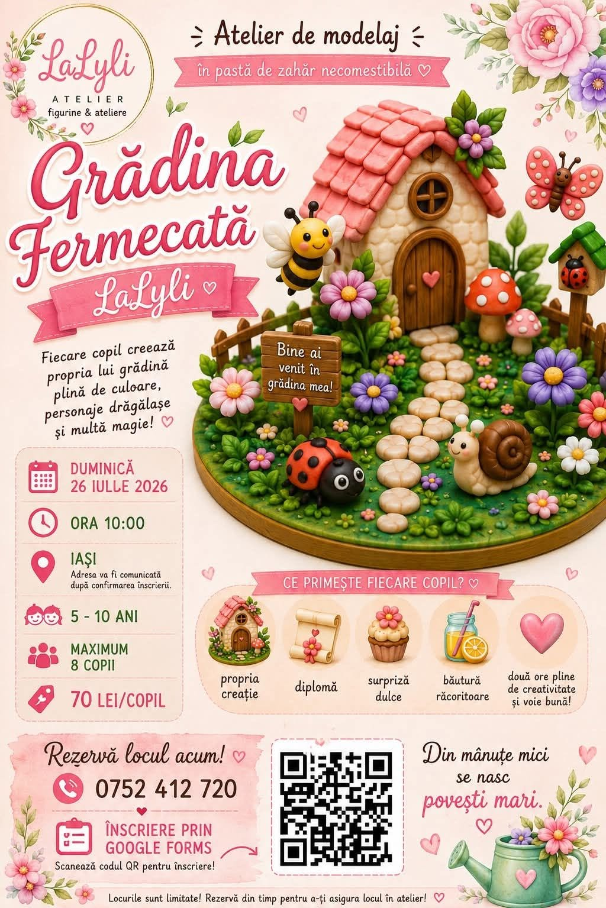
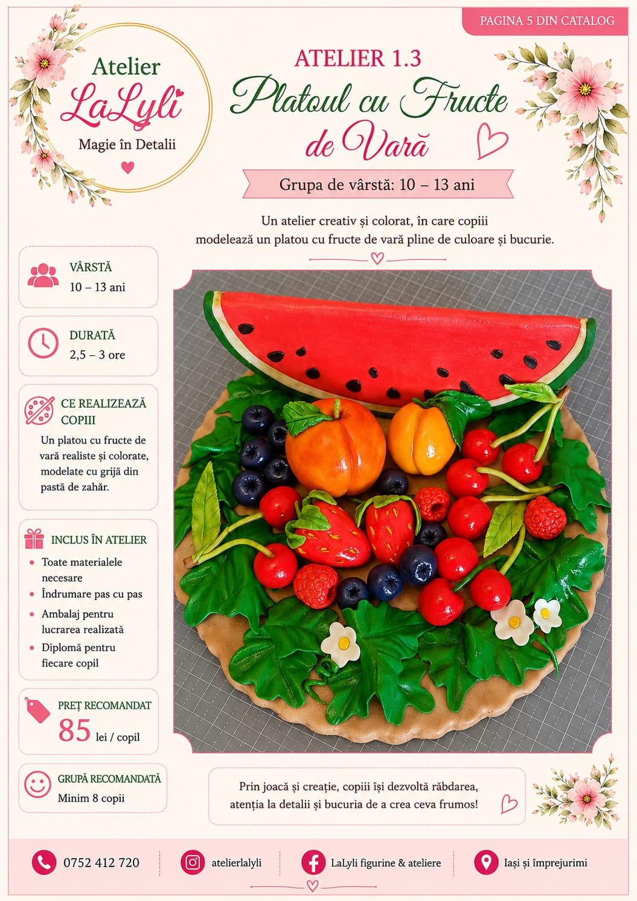
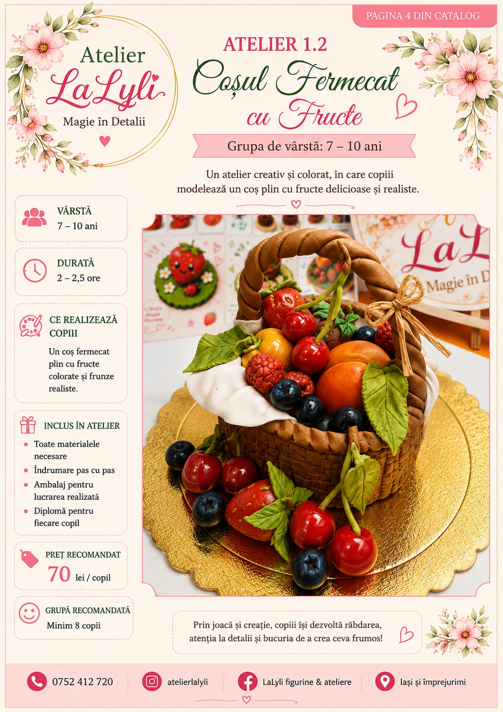
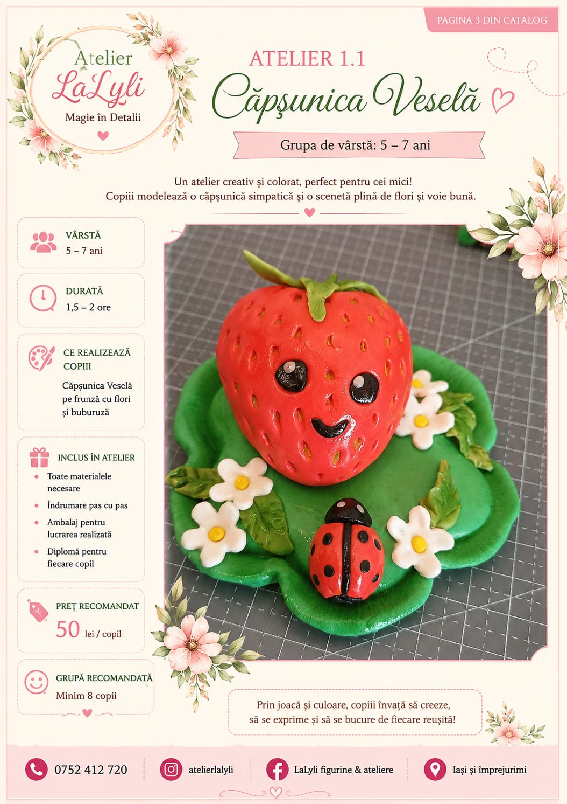
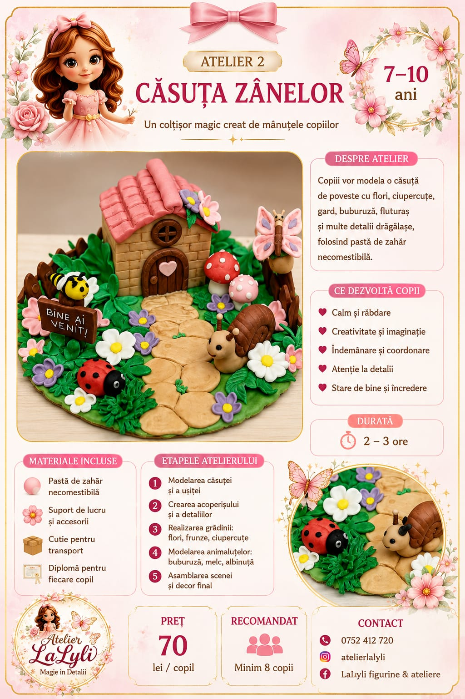
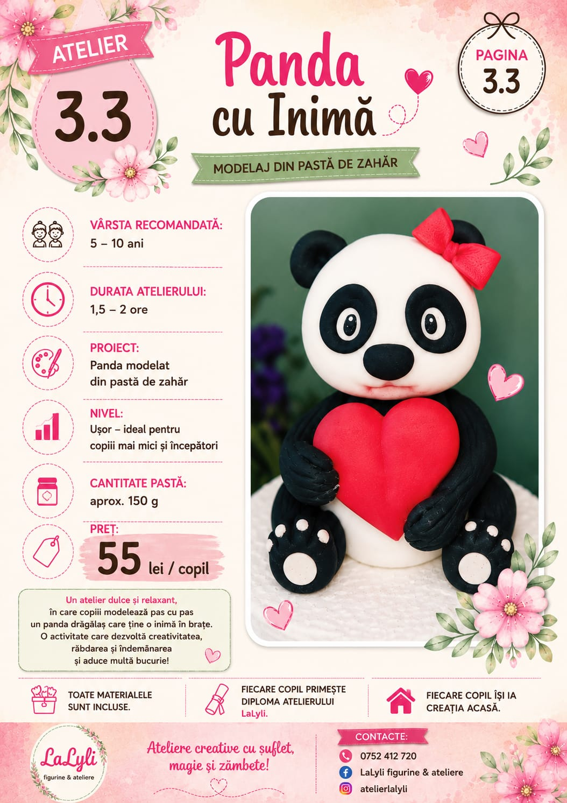
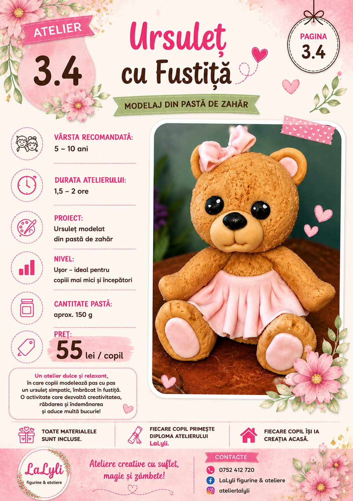

5–10 aniATELIER TEMATIC
Grădina fermecată
Construim o căsuță colorată, flori și personaje numai bune de pus într-o poveste.
Ateliere creative pentru copii · Iași
La LaLyli, fiecare copil își modelează propria poveste — cu mâinile, cu imaginația și cu multă bucurie.
LaLyli este atelierul în care cei mici descoperă cât de frumoasă este lumea atunci când o construiești chiar tu.
Modelăm personaje, flori și lumi întregi din pastă de zahăr necomestibilă — un material prietenos, maleabil și plin de culoare.
Descoperă experiența ↗Fiecare atelier este o mică aventură. Temele se schimbă, dar bucuria de a crea rămâne.

5–10 aniATELIER TEMATIC
Construim o căsuță colorată, flori și personaje numai bune de pus într-o poveste.
ATELIER DE JOACĂ
Animăluțe, fluturași și prieteni imaginari modelați pas cu pas.
ATELIER DE DETALII
Proiecte mai îndrăznețe pentru mânuțe curioase și idei mari.

5–7 ani · 50 lei / copil

7–10 ani · 70 lei / copil

10–13 ani · 85 lei / copil

7–10 ani · 70 lei / copil

5–10 ani · 55 lei / copil

5–10 ani · 55 lei / copil
Tot ce trebuie să aduci este curiozitatea. Noi pregătim restul.
Într-un spațiu cald și primitor, în Iași.
Descoperim tehnici simple, în ritmul fiecărui copil.
Fiecare copil ia acasă creația și amintirea unei zile speciale.
Spune-ne ce atelier ți-a făcut cu ochiul și revenim rapid cu toate detaliile.